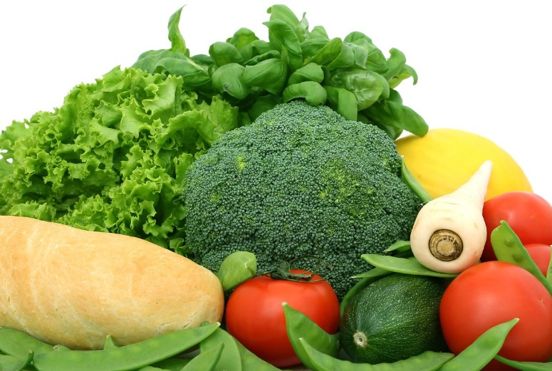
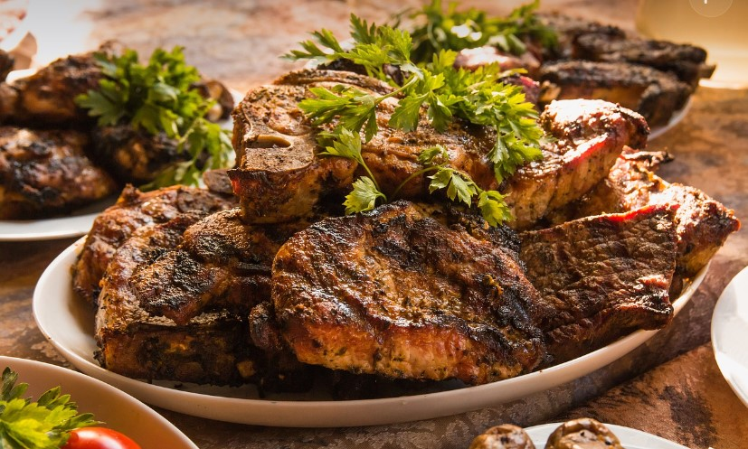

The Diet Plan for Champs
Vegan Diet Plans
Vegetarianism is the practice of abstaining from the consumption of meat (red meat, poultry, seafood, insects, and the flesh of any other animal). It may also include abstaining from eating all by-products of animal slaughter.
High Protein Diet Plans
This is a Protein Diet.This is a Protein Diet.This is a Protein Diet.This is a Protein Diet.This is a Protein Diet.This is a Protein Diet. This is a Protein Diet.This is a Protein Diet.This is a Protein Diet.This is a Protein Diet.This is a Protein Diet.This is a Protein Diet. This is a Protein Diet.This is a Protein Diet.This is a Protein Diet.This is a Protein Diet.This is a Protein Diet.This is a Protein Diet.